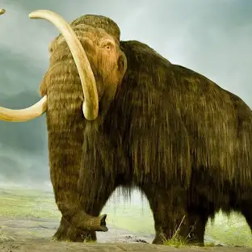
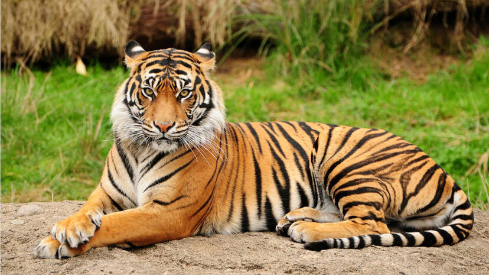

- Until one has loved an animal a part of one's soul remains unawakened.
Animals are multicellular, eukaryotic organisms in the biological With few exceptions, animals consume organic material, breathe oxygen, have myocytes and are able to move, can reproduce sexually, and grow from a hollow sphere of cells, the blastula, during embryonic development. Animals form a clade, meaning that they arose from a single common ancestor. Over 1.5 million living animal species have been described, of which around 1.05 million are insects, over 85,000 are molluscs, and around 65,000 are vertebrates. It has been estimated there are as many as 7.77 million animal species on Earth. Animal body lengths range from 8.5 μm (0.00033 in) to 33.6 m (110 ft). They have complex ecologies and interactions with each other and their environments, forming intricate food webs. The scientific study of animals is known as zoology, and the study of animal behaviors is known as ethology. Most living animal species belong to the infrakingdom Bilateria, a highly proliferative clade whose members have a bilaterally symmetric body plan. The vast majority belong to two large superphyla: the protostomes, which includes organisms such as the arthropods, molluscs, flatworms, annelids, and nematodes; and the deuterostomes, which include the echinoderms, hemichordates, and chordates, the latter of which contains the vertebrates. The simple Xenacoelomorpha have an uncertain position within Bilateria. Animals first appear in the fossil record in the late Cryogenian period, and diversified in the subsequent Ediacaran. Earlier evidence of animals is still controversial; the sponge-like organism Otavia has been dated back to the Tonian period at the start of the Neoproterozoic, but its identity as an animal is heavily contested. Nearly all modern animal phyla became clearly established in the fossil record as marine species during the Cambrian explosion, which began around 539 million years ago (Mya), and most classes during the Ordovician radiation 485.4 Mya. 6,331 groups of genes common to all living animals have been identified; these may have arisen from a single common ancestor that lived about 650 Mya during the Cryogenian period.

